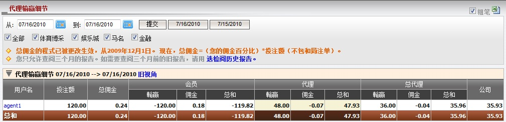

代理输赢细节
定义:
这份报告涵盖了所有在代理输赢界面的信息。

图 1.1
用词注解:
-
投注额: 会员总投注数额。
- 总佣金: 总代理从上线处可能得到的最高佣金数额。
- 会员输赢: 会员输赢的数额。
- 会员佣金: 会员从代理处得到的佣金数额。
- 会员总和: 会员包括佣金的总输赢数额。
- 代理输赢: 代理基于占成数的输赢数额。
- 代理佣金: 扣除会员佣金后, 总代理支付予代理的佣金数额。
- 代理总和: 代理包括佣金的總輸贏數額。
- 总代理输赢: 总代理基于占成数的输赢数额。
- 总代理佣金: 扣除代理佣金后, 总代理从上线处收到的佣金数额。
- 总代理总和: 总代理包括佣金的总输赢数额。
- 公司: 总代理需支付予或从上线处接收到的总数额。
您也可以点击旧视角链接以查看旧视角的代理输赢细节页面 (图1.2)。
新旧视角的差异在于代理佣金, 代理总和的信息显示。

图 1.2
用词注解:
-
代理佣金: 代理从上线处收到的佣金数额 (未扣除会员佣金)。
- 代理总和: 代理从总代理处收到或支付的总金额。